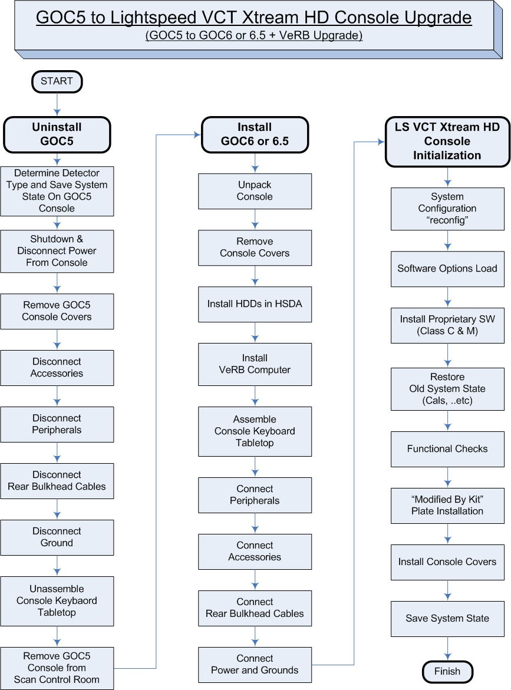
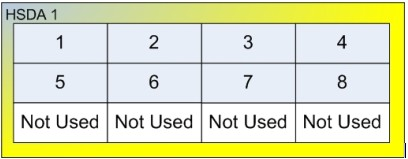
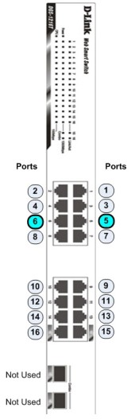
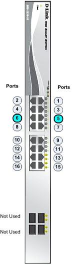
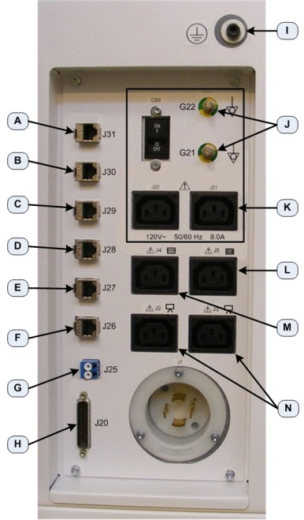
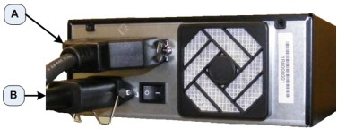
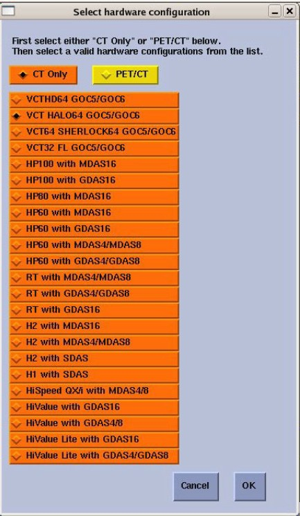
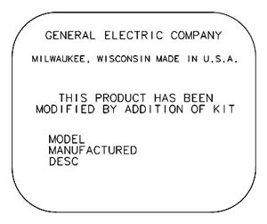
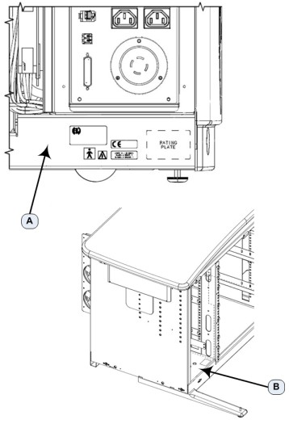

Operating Documentation
Direction 5193574-800, Rev# 22
LightSpeed 7.X Service Methods
Module Version 10.0, Version Date 8/7/12
Operating Documentation |
| Required Persons | Preliminary Reqs | Procedure | Finalization |
|---|---|---|---|
| 1 | Not Applicable | 7 hours | 1 hour |
This document describes and illustrates the steps necessary to upgrade a LightSpeed VCT GOC5 Operator Console with an Xtream HD (GOC6 Series with VeRB) Operator Console.
| Last Revised: | 10 October 2011 |
Refer to the flowchart in Illustration 1 for the overall upgrade process. .
Illustration 1: GOC5 to LightSpeed VCT Xtreme HD Console Upgrade (GOC5 to GOC6 Series + VeRB Upgrade) Flowchart

| NOTE: | Please review Section 3.5, Required Conditions, before proceeding with this upgrade procedure. |
| Item | Qty | Effectivity | Part# | Manufacturer | |
|---|---|---|---|---|---|
| Torque Wrench | 1 | - | - | - | |
| Standard FE Toolkit | 1 | - | - | - | |
| Item | Qty | Effectivity | Part# | Manufacturer |
|---|---|---|---|---|
| Tie-wraps | 10 | - | 46-208758P3 | - |
| Item | Qty | Effectivity | Part# | Manufacturer | |
|---|---|---|---|---|---|
| VCT GOC6 or GOC6.5 Console for Upgrades | 1 | - | B7820GM / 5212920-300 for GOC6 or 5212920-310 for GOC6.5 | - | |
| Black SCIM | 1 | - | B7877HH / 5335142 | - | |
| Peripheral Collector (Mouse and USB P-Tower) | 1 | - | B7877HE / 5308671 | - | |
| Monitors | 1 | - | B7877LC / 5323571 | - | |
| Accessory Power Cable Kit | - | B7820HD / 5323350 | - | ||
| LightSpeed VCT Technical Publications | 1 | - | B7820GE / xxxxxxx | - | |
| VeRB Upgrade Kit (35 FPS) | 1 | - | B7877HZ / 5321434 | - | |
| ASIR Option | 1 | - | B7820HJ / 5326782 | - | |
| VHS Option | 1 | - | B7877H / 5326784 | - | |
| Black Keyboard | 1 | - | Various / Select Language | - | |
| HD MOD Peripheral Tower (Optional) | 1 | - | B7877HM / 5481000 | - | |
| Bar Code Reader (Optional) | 1 | - | B7877BC / 5273097-2 | - | |
| ||||
| ELECTROCUTION HAZARD | ||||
| HIGH VOLTAGE PRESENT. | ||||
| USE PROPER LOCKOUT / TAGOUT PROCEDURES WHEN INSTRUCTED, WHILE PERFORMING THIS CONSOLE UPGRADE PROCEDURE. |
| ||||
| FINGER PINCH AND SHARP EDGES HAZARD | ||||
| DUE TO TIGHT CLEARANCES OF RACK MOUNTED COMPUTERS AND SHARP EDGES OF CHASSIS COMPONENTS, FINGER AND HAND INJURIES CAN OCCUR. | ||||
| Wear HAND PROTECTION GLOVES AND PAY ATTENTION to HAND AND FINGER LOcaTIONs AT ALL TIMES. |
| ||||
| POTENTIAL FOR INJURY TO SERVICE PERSONNEL. | ||||
| VERB COMPUTER CHASSIS CAN WEIGH IN EXCESS OF 40 POUNDS. | ||||
| DEPENDING ON YOUR HEIGHT AND ACCESS TO EQUIPMENT REMOVAL/INSTALLATION, LIFTING ASSISTANCE MAY BE REQUIRED. USE YOUR JUDGMENT TO DETERMINE IF LIFT ASSIST OR A SECOND PERSON MAY BE REQUIRED TO ASSIST IN REMOVAL AND INSTALLATION. |
| ||||
| TO PREVENT DAMAGE TO COMPONENTS WITHIN THE CONSOLE, OBSERVE
THE FOLLOWING ESD PRECAUTIONS:· WEAR A STATIC STRAP TO ENSURE
THAT ANY ACCUMULATED ELECTROSTATIC CHARGE IS DISCHARGED FROM YOUR
BODY TO GROUND.· CREATE A COMMON GROUND FOR THE EQUIPMENT YOU
ARE WORKING ON BY CONNECTING THE STATIC-FREE MAT, STATIC STRAP AND
PERIPHERAL UNITS TO THAT PIECE OF EQUIPMENT. FOR FURTHER INFORMATION REGARDING ESD PROTECTION, REFER TO THE SAFETY CHAPTER IN THIS PUBLICATION | ||||
| ||||
| FOLLOW ALL REQUIRED SAFETY AND PPE PROCEDURES CUSTOMARY FOR YOUR ORGANIZATION WHEN WORKING ON THIS PRODUCT. | ||||
| Condition | Reference | Effectivity |
|---|---|---|
This Upgrade applies only to LightSpeed VCT CT Systems. | - | - |
Only trained service personnel should service the GE CT Scanner. | - | - |
Before starting upgrade and console disassembly, check contents of Upgrade Kit to make certain all supplied parts are present and have not been damaged in shipping. (Refer to Section 3.3, “Replacement Parts”)
If the existing GOC5 Operator Console has a SCSI MOD Archive Peripheral Tower, a new version of the Option should have been ordered with the Xtream HD Console Upgrade.
| NOTE: | There are three types of VCT Detectors/DAS released, VDAS (Sherlock Detector), HDAS (HALO Detector), and HDAS_Saturn_64 (Saturn Detector). They are identified on the Common Service Desktop Home page "Data Acquisition System" type listed as VDAS, HDAS, or HDAS_SATURN. |
Before un-installing GOC5 Console, identify which Detector/DAS type is present with system being upgraded.
Look at the Common Service Desktop home page for the DAS type entry. If the DAS type = VDAS64 or HDAS64, then you have a Sherlock or HALO detector and system software will need to be reloaded after installing the new Xtream HD Console. The Lighspeed VCT Xtream HD GOC6 Series console comes loaded for the DAS type = HDAS_SATURN_64, which is the Saturn detector.
Record the DAS type now, to be used later in the Console Initialization section.
Save a new System State in accordance with Software - GOC5 > Software Installation > System State Save & Restore in the LightSpeed VCT Service manual supplied with this upgrade.
Note that the above System State Save & Restore procedure is applicable to GOC5 as well.
Select one of the following methods to power off the Operator Console:
If Applications are running, click on [Shut Down] and select [Shutdown].
If Applications are down, open a Unix Shell using the Toolchest. Type:
{ctuser@hostname} halt[ENTER]
The Operator Console Monitor will display a System Halted message when it is acceptable to power off the Operator Console.
Power OFF the Operator Console at the front panel switch.
Remove the Console’s incoming Twist-N-Lock Power Cable from rear of GOC5 Console.
Perform Lockout / Tagout as described in Safety - Equipment Service - Lockout / Tagout / PPE in the LightSpeed VCT Service Manual.
Move the console away from the wall to allow clear access around the console.
Remove the console front and rear covers and set aside.
Disconnect the Accessories in the following table from the GOC5 Console. Follow table instructions for disposition of items removed.
Table 1: Accessory Disposition Instructions
| Accessory | Description | Disposition | Notes |
| Monitors | Beige LCD Panels | Return with GOC5 Console | - |
| Bar Code Reader | PS/2 Interface | Return with GOC5 Console | - |
| Trackball | USB Interface | Keep for GOC6/6.5 Console | - |
| Video Amp/Splitter | Option: Boom in Room | Keep for GOC6/6.5 Console | Keep I/F cables |
| Digital DASM | SCSI Camera I/F | Keep for GOC6/6.5 Console | Keep I/F cables |
| Service Modem* | Proprietary Service RCat | Keep for GOC6 Console | Keep I/F cables |
| *GOC6.5 Operator Console no longer supports Service Modem | |||
Remove the Monitors from the GOC5 Console by disconnecting the Video Cables from the Host Computer, and Power Cables from the Console Outlet Box inside the GOC5 Console. These cables will be returned with the GOC5 Console.
Disconnect and remove the Trackball from the GOC5 Console.
Disconnect and remove the Barcode Reader (if so equipped) from the GOC5 Console.
Disconnect and remove the Remote Monitor Video Amp/Splitter (if so equipped) from the GOC5 Console. Make sure that all cable connections are labeled. Disconnect the Video Amp/Splitter power cable from the Console Outlet Box inside the GOC5 Console. Keep these cables that were connected to the Video Amp/Splitter, as they will be needed for new GOC6 Series Console.
Disconnect and remove the Digital DASM (if so equipped) from the GOC5 Console. Make sure that all cable connections are labeled. Disconnect the SCSI I/F cable from the Host Computer. Disconnect the Digital DASM power cable from the Console Outlet Box inside the GOC5 Console. Keep these cables, as they will be needed for new GOC6 Series Console.
Disconnect and remove the Service Modem (if so equipped) from the GOC5 Console. Make sure that all cable connections are labeled. Disconnect the RS232 cable from the Host Computer. Disconnect the Service Modem power cable from the Console Outlet Box inside the GOC5 Console. Keep these cables, as they will be needed for new GOC6 Series Console.
Disconnect the following peripherals in the following table from the GOC5 Console. Follow table instructions for disposition of items removed.
Table 2: Peripheral Disposition Instructions
| Peripheral | Description | Disposition | Notes |
| Peripheral Tower | SCSI | Return with GOC5 Console | Keep Media |
| SCIM | Beige | Return with GOC5 Console | - |
| Mouse | Beige, PS2 | Return with GOC5 Console | - |
| Keyboard | Beige, PS2 | Return with GOC5 Console | - |
Disconnect and remove SCSI Peripheral Tower from GOC5 console.
Disconnect the SCSI Cable from the Host Computer and Power Cable from Console Outlet Box inside the GOC5 console.
These cables will be returned with GOC5 Console.
Disconnect and remove the SCIM Assembly from GOC5 console.
Disconnect the SCIM Cable from the under side of the SCIM Assembly.
Disconnect and remove the Mouse from the GOC5 console.
Disconnect the Keyboard PS2 cable from the Upper Bulkhead Panel.
Disconnect and remove the Keyboard from the GOC5 console.
Disconnect the Keyboard PS2 cable from the Upper Bulkhead Panel.
Disconnect all cables connected to the Rear Bulkhead Panel on the GOC5 Console. These include the Network, Fiber Optic Link, and Gantry DB25 Cables.
Make sure that all cables are clearly labeled as to their function and source.
Remove the Scan Room Patient Reference Ground cable from GOC5 console.
Make sure cable is clearly labeled as to function and source.
Remove the Operator Console Keyboard Table Top Assembly and Support Arms from the GOC5 Console.
Keep track of all hardware (bolts, washers).
Locate this hardware with the Keyboard Tabletop Assembly by placing the hardware in a small plastic bag and taping it to the tabletop.
Remove the GOC5 Operator Console from the Scan Control Room.
Remove any accessory and peripheral items being returned to make room for the GOC6/6.5 Console.
Refer to Installation > Mechanical Installation > Operator Console Installation in the LightSpeed VCT Service Manual supplied with the upgrade and follow the unpacking instructions.
| NOTE: | Take care not to damage or throw out any of the packing material. This will be used to repack the GOC5 Console for return. |
Move the Console into the Scan Control Room.
Refer to Installation > Mechanical Installation > Operator Console Installation in the LightSpeed VCT Service Manual supplied with the upgrade and follow the Console Cover Removal instructions.
Do not install the Keyboard Tabletop Assembly at this time.
Locate the shipping boxes that contain the HSDA Drives with Trays.
Open the shipping boxes and notice that each Drive Tray is now be labeled with a number. This number corresponds to the HSDA Bay location where the Drive Tray should be installed. (See Illustration 2)
Illustration 2: Drive Bay Location for HSDA1 (Console Front)

Insert each of the eight (8) Drive Trays into their proper bay location.
| NOTE: | By placing Drive Trays in their designated HSDA bay locations, recreating the Scan Data Logical Disk Array will not be required. |
Make sure all Drive Trays are securely inserted and Drive Tray Doors are closed and locked.
(Note: VeRB Computer used in GOC6, VeRB2 Computer used in GOC6.5)
At the front of the Console, remove the Rack Blank Panel (Item A in Illustration 3) immediately above the DIG Computer. The Rack Blank Panel is no longer needed. Dispose of it properly.
Illustration 3: Console Rack Blank Panel Location

| A | Rack Blank Panel |
| NOTE: | Save the four (4) 5mm socket cap bolts and washers. |
Remove the VeRB Computer (5255299-30 For GOC6 or 5255299-31 for GOC6.5) from the shipping container and check that all packing material has been removed and is not blocking intake fans or ventilation grills on the computer chassis.
Lift and slide the VeRB Computer in the front of the console, sliding the VeRB Computer on the two rack guides already installed in the console rack. Push the VeRB Computer fully into the console rack until it is flush with the front of the console rack.
Mount the VeRB Computer to the console rack utilizing the four (4) 5mm socket cap bolts and washers removed earlier. Torque to 4.6 N-m.
At the rear of the console, plug the VeRB Computer Power Cable (5314704) into the VeRB Computer. (Item C in Illustration 4)
Illustration 4: VeRB Power and Network Connections

| Item | Destination | |
| A | VeRB Network Port: | CNS Eth 6 (Port 6) |
| B | VeRB RMM Network Port | CNS Eth 5 (Port 5) |
| C | VeRB Power Receptacle | - - - |
| D | VeRB Power Switch | - - - |
Label the other end of the VeRB power cord “VeRB J13” using the supplied Cable Labels. Insert this end of the VeRB Computer Power Cable into the console cabinet, along the right side top of the rack, to the Power Distribution Box. (See Illustration 6)
Plug this end of the VeRB Power Cord into J13 on the Power Distribution Box. (See Illustration 5)
Illustration 5: J13 - VeRB Power Cable Location on Power Distribution Box

Run the power cable along the cable tray (Item A in Illustration 6), directly above the VeRB Computer. Using several tie wraps, secure the VeRB Power Cable to the cable tray.
Illustration 6: VeRB Power and Network Cable Routing

| A | Computer Power Cable Tray |
| B | Network Cable Tray |
At the rear of the console, plug the VeRB Computer Network Cable (5313765) into the VeRB network port. (Item A in Illustration 4) Label this end of the network Cable “VeRB Eth 6” using the supplied Cable Labels (5316747-3).
Label the other end of the VeRB Computer Network Cable “Eth 6 VeRB” using the supplied Cable Labels. Insert this end of the VeRB Computer Network Cable into the console cabinet, along right side bottom of the rack, to the Console Network Switch (CNS). (See Illustration 6)
At the rear of the console, plug the VeRB Computer RMM Network Cable (5313765) into the VeRB RMM network port. (Item B in Illustration 4) Label this end of the network Cable “VeRB RMM Eth 5” using the supplied Cable Labels.
Label the other end of the VeRB RMM Network Cable “Eth 5 VeRB RMM” using the supplied Cable Labels. Insert this end of the VeRB Computer Network Cable into the console cabinet, along right side bottom of the rack, to the CNS. (See Illustration 6)
Connect the VeRB Network Cables into their respective ports on the CNS. (See Illustration 7or Illustration 8 depending on Console Network Switch version.)
Illustration 7: VeRB Network Cable Connections on Console Network Switch (5263798)

Illustration 8: VeRB Network Cable Connections on Console Network Switch (5263798-2)

Run the Network Cables along the cable tray (Item B in Illustration 6), directly below the VeRB Computer. Using several tie wraps, secure the VeRB Network Cables to the cable tray.
Refer to Installation - Mechanical Installation - Operator Console Installation in the Lightspeed VCT Service Manual supplied with the upgrade.
Follow the Console Keyboard Tabletop installation instructions.
Connect the USB DVD Peripheral Tower to GOC6/6.5 console.
Connect the USB Cables coming from the Host Computer into the rear of the DVD Peripheral Tower. (See Illustration 9)
Illustration 9: DVD Peripheral Tower Connections

| Item | Destination | |
| A | External USB Hard Drive | Host PC USB Expansion Card |
| B | DVD-RW or Multimedia Drive (only on 1 Bay Units) | Host PC Integrated USB Port |
| C | DVD-RAM Drive (not used on 1 Bay Units) | Host PC Integrated USB Port |
| D | MOD Peripheral Tower Power | MOD Peripheral Tower |
| E | DVD Peripheral Power | Lower Rear Bulkhead Panel |
Connect the DVD Peripheral Tower Power cable to the rear of the DVD Peripheral Tower (Item E in Illustration 9) and connect the other end of the Power Cable into the Lower Rear Bulkhead Panel. (Item L in Illustration 10)
Illustration 10: Lower Rear Bulkhead Panel Connections

| Item | Destination | |
| A | RPM (J31) | RPM Gate |
| B | EKG (J30) | EKG Gate |
| C | AW (J29) | Advantage Work Station (Direct Connect) |
| D | Veo (J28) | Veo (if so equipped) |
| E | TGP (J27) | Gantry Network Cable |
| F | HSP (J26) | Main Facility Network Connection |
| G | Slip Ring (J25) | Fiber Optic Cable from Gantry |
| H | Gantry (J20) | DB25 Cable from Gantry |
| I | Scan Room Patient Reference Ground | - |
| J | Accessory Grounds | Accessories |
| K | Accessory Power | Accessories ( Injectors, RPM ) |
| L | DVD Peripheral Tower Power | - |
| M | DVD Peripheral Tower Power | - |
| N | Monitor Power | - |
Connect the MOD Peripheral Tower (if this option is supplied with the upgrade) to the GOC6/6.5 Console.
Connect the SCSI Cable coming from the Host Computer into the rear of the MOD Peripheral Tower. (Item A of Illustration 11)
Illustration 11: MOD Peripheral Tower (Optional) Connections

| Item | Destination | |
| A | SCSI Port | Host PC SCSI Port 1 |
| B | MOD P-Tower Power | DVD P-Tower |
Connect the MOD Peripheral Tower Power Cable into the MOD Peripheral Tower (Item B in Illustration 11), and insert the other end of the Power Cable into the DVD Peripheral Tower. (Item D in Illustration 9)
Connect the SCIM Assembly to the GOC6/6.5 Console by inserting the SCIM Interface cable into the SCIM Assembly. (Item A in Illustration 12)
Illustration 12: SCIM Assembly Connections

| Item | Destination | |
| A | SCIM I/F | J19 on ICOM Assembly |
| B | Keyboard USB Cable Pass-through | - |
Connect the Mouse to the GOC6/6.5 Console by plugging the Mouse into the Upper Bulkhead Panel. (Item B in Illustration 13)
Illustration 13: Upper Bulkhead Panel Connections

| A | Bar Code Reader USB Port |
| B | Mouse USB Port |
| C | Keyboard USB Port |
| D | Trackball USB Port |
Connect the Keyboard to GOC6 / 6.5 Console by passing the Keyboard USB Cable through the SCIM Assembly (Item B in Illustration 12) and plugging the Keyboard into the Upper Bulkhead Panel. (Item C in Illustration 13)
Connect the Monitors to the GOC6 / 6.5 Console by inserting the Video cables (Item B or C in the following Illustrations) into the Monitors coming from Host Computer.
Illustration 14: NEC 1990SXi LCD Display / Image Monitor Connections GOC6 & GOC6.5

Illustration 15: EIZO S1921-X LCD Display / Image Monitor Connections GOC6 & GOC6.5

| Item | Destination | |
| A | Power Cable Connection | Rear Bulkhead Panel |
| B | SVGA Video Connection | Host PC Video Card |
| C | DVI-A Video Connection | Host PC Video Card |
Illustration 16: NEC 1990SXi LCD Prescription / Scan Monitor Connections GOC6
Illustration 17: EIZO S1921-X LCD Prescription / Scan Monitor Connections GOC6
Illustration 18: NEC 1990SXi LCD Prescription / Scan Monitor Connections GOC6.5

Illustration 19: EIZO S1921-X LCD Prescription / Scan Monitor Connections GOC6.5

Run the Power cables from the Monitors (Item A in the above Illustrations) to the Console’s Lower Rear Bulkhead Panel. (Item N in Illustration 10).
For NEC 1990SXi LCD Monitors, make sure that the Monitor Power Switch (Illustration 20) has been turned ON.
Illustration 20: Monitor Power Switch

Connect the Trackball to the GOC6/6.5 Console by plugging the Trackball into the Upper Rear Bulkhead Panel. (Item D in Illustration 13)
Connect the Bar Code Reader (if so equipped) to the GOC6/6.5 Console by plugging the Bar Code Reader into the Upper Rear Bulkhead Panel. (Item A in Illustration 13)
Place and connect the Video Amp/Splitter (if so equipped). Connect the Video Amp/Splitter power cable to the Console Outlet Box inside the GOC66.5 Console. (See Item J10 in Illustration 21)
Illustration 21: Power Distribution Box

Connect the Video cable coming from the Host Computer Right Display and Right Display Monitor Video cable to the Video Amp/Splitter.
Place and connect the Digital DASM (if so equipped). Plug the Digital DASM power cable to the Console Outlet Box inside the GOC6/6.5 Console. (See Item J17 in Illustration 21) Connect the SCSI I/F cable coming from the Digital DASM to the Host Computer SCSI Port.
Place and connect the Service Modem (if so equipped) to the GOC6 Console. Plug the Service Modem power cable to the GOC6 Console Outlet Box. (See Item J11 in Illustration 21.) Connect the RS232 cable coming from the Service Modem on the Host Computer Serial Port.
Reconnect the Gantry and Network Interface Cables removed earlier from the GOC5 Operator Console.
See Illustration 10 for proper connection locations.
NOTICE: IT IS IMPORTANT THAT NETWORK INTERFACES BE CORRECTLY PLUGGED INTO THEIR RESPECTIVE PORT LOCATIONS.
Connect the Scan Room Patient Reference Ground cable to the rear of the GOC6/6.5 Console. (Item I in Illustration 10)
Connect the Twist-N-lock Power Cable on the GOC6/6.5 Console.
Remove Lockout/Tagout.
Refer to Safety - Equipment Service - Lockout / Tagout - PPE in the LightSpeed VCT Service Manual supplied with the upgrade, and perform the Lockout/Tagout process in reverse.
Power On the console and confirm that all computer connections are receiving power.
| NOTE: | At this time the GOC6/6.5 console may not properly initialize to full system functionality. |
Read this section in its entirety before executing this part of the procedure! In almost every case a Load From Cold will be required to complete the Console Upgrade.
Make note of the following LFC process clarifications:
Refer to DAS type as record in Section 4.2 "Identify Dectector/DAS type. A VDAS64 or 32 is a “Sherlock” detector, and is noted in the Parts list as VDAS. The HDAS64 is a HALO detector is noted in the Parts list as HDAS. The HDAS_SATURN_64 is a Saturn detector, and is noted in the Parts list as Saturn.
| NOTE: | LFC is required on SHERLOCK and HALO Detector-based VCT Systems receiving this upgrade. All Saturn Detector-based systems should already be using a GOC6/6.5 Series Console and not be receiving this upgrade. |
Manually configure System Type. During the APPS Load Section of the LFC, do not use the System State disk from the older GOC5 console or the new GOC6/6.5 console to retrieve System INFO file. System Type must be manually configured during this initial LFC.
Illustration 22: Manual System and Console Hardware Configuration

During the LFC process when executing the LFC Menu, skip the Restore System State step. Items like Cals, Characterization, and Protocols will be restored after the LFC has been performed.
| NOTE: | Restore System State in the LFC Menu is an automated process and does not allow for selection of individual categories for restore. |
Perform GOC6 Series Load from Cold.
Refer to Software GOC6/6.5 > Software Installation Procedures >(xxMWxx.x) GOC6 Series Load From Cold procedure in the LightSpeed VCT Service manual supplied with the upgrade and follow the procedure for loading System Software.
| NOTE: | Check the Applications software version on the CD shipped with the upgrade, then follow the applicable (xxMWxx.x) Software LFC procedure on the supplied Service Information CD |
| NOTE: | New License Keys will be supplied with Console Upgrade. All old Software License keys from original Customer Order (GOC5) for the system being upgraded will no longer work for the new console. During the ordering process for the Xtream HD Console Upgrade, Sales will need to supply a list of the Options the Customer originally acquired. |
Upon completion of the LFC and reboot of System, perform a Restore System State. Restore the following files and data from the old GOC5 System State:
Protocols
Characterization
Cals
Auto Voice
Display Preferences
Camera Preferences
Tube Usage Files:
Immediately after restoring System State run the following ConvertTubeUsageFiles command:
Open a Unix shell.
At ctuser type: ConvertTubeUsageFiles (Note: Case sensitive.)
Enter Selection: 4, Done Converting Tube Usage Files!
Now perform a Scan Hardware Reset and reboot the system.
Create a final System State Disk
Perform the (xxMWxx.x) System State Save & Restore procedure and save a System State Backup to either DVD-RAM or USB Media.
Refer to Functional Checks - System Scanning Tests in the LightSpeed VCT Service Manual supplied with the upgrade and perform the tests to confirm proper operation.
Attach the VeRB Upgrade “Modified By Kit” plates (5335238) (Illustration 23) alongside the present Rating Plates. (Locations A and B in Illustration 24)
Illustration 23: Modified By Kit Plate

Illustration 24: Modified By Kit Plate Locations

| A | Back side of Console, near Rear Bulkhead Panel |
| B | Inside Console, near Power Distribution Box |
Reinstall the Console Front and Rear Covers.
| NOTE: | Refer to Replacement > Console > GOC6/6.5 > Console Cover Removal and Installation in the LightSpeed VCT Service Manual for more details. |
Save a new System State in accordance with Software GOC6/6.5 > Software Installation procedures > System State Save Restore in the LightSpeed VCT Service manual supplied with the upgrade.
The old GOC5 console has components that are needed to cover FRU shortages, so PLEASE RETURN THE GOC5 CONSOLE. Follow the normal local return process to return the GOC5 console.
Package the GOC5 console with the shipping material from the new GOC6/6.5 console.
Mark the outside of the box “GOC5 Console.”
For U.S. sites, call Schenker Heavyweight Return at 866-229-7877 (Option 25), and ship to:
GE Healthcare Renewable Resources
7624 South 10th Street
Oak Creek, WI. 53154